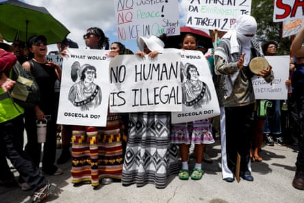

Donald Trump on Tuesday toured Alligator Alcatraz , a controversial new migrant detention jail in the remote Florida Everglades, and celebrated the harsh conditions that people sent there would experience.
The president was chaperoned by Florida’s hard-right governor, Ron DeSantis , who hailed the tented camp on mosquito-infested land 50 miles west of Miami as an example for other states that supported Trump’s mass deportation agenda.
“You’ll have a lot of people that will deport on their own because they don’t want to end up in an Alligator Alcatraz, or some of these other places,” DeSantis said.
“This is a model, but we need other states to step up.”
Hundreds of protesters greeted Trump and the homeland security secretary, Kristi Noem, as they arrived at the hastily assembled camp. The space was previously a largely disused airstrip surrounded by swampland abundant in alligators and Burmese pythons.
Opponents say the encampment, which DeSantis said would open on Wednesday for the first of an initial intake of up to about 1,000 detainees, places unsustainable environmental demands on the fragile wetlands, and will subject those held there to cruel and demeaning treatment.
Trump made no effort to challenge that narrative as he spoke to reporters before leaving Washington DC to travel to Florida , laughing as he made zigzag motions with his hands while offering advice to anybody thinking of escaping.
“The snakes are fast, but alligators [are faster],” he said.
“We’re going to teach them how to run away from an alligator. Don’t run in a straight line, look, like this, and you know what? Your chances go up about 1%. Not a good thing.”
At a press conference following the tour, Trump was equally dismissive of concerns about conditions in the Everglades, where the daily heat index in July regularly exceeds 100F (37.8C).
“It might be as good as the real Alcatraz. A little controversial, but I couldn’t care less,” he said.
He praised the DeSantis administration for “a fantastic job” in erecting dozens of giant tents in little more than eight days, and saying the camp would “keep people where they’re supposed to be”. Ultimately, 5,000 detainees could be held there.
“They have a lot of bodyguards and a lot of cops in the form of alligators, you don’t have to pay them so much,” Trump said.
Protesters flank an entrance road of a temporary migrant detention center nicknamed ‘Alligator Alcatraz’ in Ochopee, Florida, on Tuesday.Photograph: Octavio Jones/Reuters
The camp will be patrolled by the Florida national guard, and the state’s taxpayers will be on the hook for the $450m (£328m) cost of setting up and operating the facility, initially at least.
DeSantis said Florida expected to be reimbursed by the Department of Homeland Security, which will assume responsibility for as long as the Trump administration deems is necessary.
Immigration advocates have attacked the use of such a harsh place to detain people whose only transgression is to be undocumented. Despite Trump and his acolytes frequently insisting that only those with criminal records are being targeted, figures show a surge in arrests by the Immigration and Customs Enforcement agency (Ice) of those with no criminal record. The Trump administration has set a target of 3,000 immigration arrests a day.
In mid-June, Ice data showed, more than 11,700 people were in immigration detention who had never been charged or convicted of a crime.
The Everglades camp is opening as the number of deaths of those in Ice custody continues to climb. A 75-year-old Cuban man, who had been in the US for almost 60 years, died in Ice custody in Miami on 26 June, the 13th death in the agency’s facilities since October.
The camp is “designed to enact suffering”, Thomas Kennedy, a spokesperson for the Florida Immigrant Coalition said.
“They pick the most controversial site possible, right in the Everglades, using language like the alligators and the snakes, making it seem like it’s going to be like a medieval castle with a moat.”
On Tuesday, DeSantis brushed aside criticism about the conditions, stating that the camp was necessary but temporary, and that those who were sent there would be well catered for. He said the soft-sided tents, containing bunk beds and portable air conditioning units, were erected by the Florida emergency management agency, and were those that would be used for hurricane evacuees.
“You’ll see all the beds, the medical, the galley, everything is on the concrete,” he said.
Environmentalists have challenged the location of the facility, joined by two Native American tribes, the Miccosukee and Seminole, who have criticised the use of their ancestral lands.
Two groups, Friends of the Everglades and the Center for Biological Diversity, filed a lawsuit in federal court in Miami last week, seeking to halt the project and arguing that a required environmental study had not taken place.
The project has also drawn the ire of Democratic politicians. The Florida congressman Maxwell Frost said in a statement that the camp was “a cruel spectacle” and amounted to “physical and psychological torture”.
He said: “They intend to use the power of government to kidnap, brutalize, starve, and harm every single immigrant they can.”